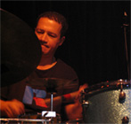

Francine Luce's Quintet
“Unique, experimental, and innovative sounds combine with the seductive vocals of Francine Luce to create a new jazz venture of sublime song and superb composition…”
Introducing a collaboration which brings together the eclectic talent of some of the U.K's most esteemed musicians. This quintet explores an original mix of groove, jazz and free improvisations across a wide musical map. Francine is joined by a truly multi-cultural line up featuring Mark Sanders (England/Central America) on drums, Satin Singh (India) on percussion- tabla, John Edwards (England) on double bass and Tsivi Sharett (Israel) on piano.
Their sound is a musical feast of international flavour uniting vast influences from around the world. Both emotive and evocative, Francine sings in English, French and Creole from Martinique . Creating a jazz feel, African and Indian percussion fuse with Caribbean and oriental strains to clearly reflect the ethnic roots and diverse talent of the band. A unique aspect of Francine's song writing is her exploration of various sound combinations within the band, allowing the listener to experience various compositions in duet (voice/ double bass) to trio (piano/voice/percussion) through to the complete synergy of the quintet.
Francine has worked frequently with John in the Louis Moholo's Ensemble and with Mark in the Free Improvised Music London scene. Tsivi Sharett and Satin Singh are new members who complete this quintet, offering both structured compositions and free style pieces.
Meet the band….
|  |
 |
|
|
Mark Sanders |
John Edwards |
Tsivi Sharett |
Satin Singh |
Mark Sanders - Drums
Since the mid ‘90s, Mark has been one of the most active drummers on the UK Jazz scene, “Jazz” encompassing everything from free improvisation to Jah Wobble's dub excursions. Despite his impressive discography (appearing on over 50 titles), Mark is a member of the London Improvisers Orchestra and has worked with Steve Beresford, Simon H. Fell, Georg Graewe, Evan Parker, John Edwards, Veryan Weston, Paul Rogers, Elton Dean, Dudu Pukwana, the Chris Batchelor/Steve Buckley quartet and many more.
Satin Singh- Percussion - Tabla
Since starting his professional career in London , Satin has studied and played a wide array of percussive instruments such as the Congas, Timbale, Djembe, Tabla and Darabuka. His musical influences reach from Africa, Cuba , Brazil and India plus a variety of styles such as Latin/Jazz/Funk/Dance and Popular music. He has been on the international scene since 1985 working with Steve Wonder, Nina Simone, Escoffery sisters, Roy Ayer, Roberto Pla and his Latin Jazz Ensemble, Dave Valentine, Mervin Africa, Jazz Warriors, Denis Batiste, Michael Pettruchini and many more.
John Edwards - Double bass
Since taking up the bass, John has always been involved with a wide diversity of musical styles and situations. At home with composed and improvised music, he is one of the busiest musicians on the London scene. Probably best known for his work with Evan Parker, John Butcher, Sonny Murray, Peter Brotzmann etc, he has played in the groups GOD and B-Shops for the Poor. John features on over 70 jazz recordings to date.
Tsivi Sharett - Pianist
“London based Israeli pianist and composer Sharett subtly brings together her own traditions, classical music , Jazz, Latin and much more” The Guardian.
Born in Israel , Tsivi studied conducting at the Rubinstein in Tel Aviv. Currently based in London , Tsivi enjoys a diverse career as a composer, arranger and a pianist, regularly performing throughout London 's most revered live venues such as the Jazz café, the South Bank Festival and more.
|